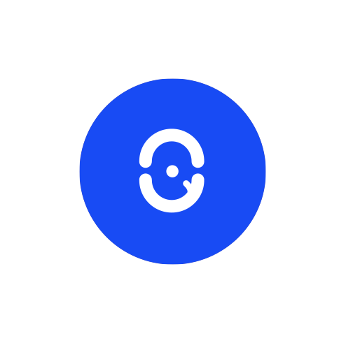
Secure
Advanced security for your home and devices.
Lifecycle Platform
Linqio is a connected home platform concept designed to bring smart devices, security and everyday routines together in one simple experience.
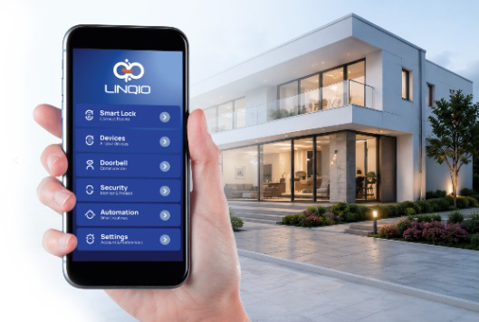
THE IDEA
Linqio brings together the many devices that make up a connected home - from smart locks and doorbells to lights and appliances. The goal was to make that growing ecosystem feel simple, secure and easy to control.
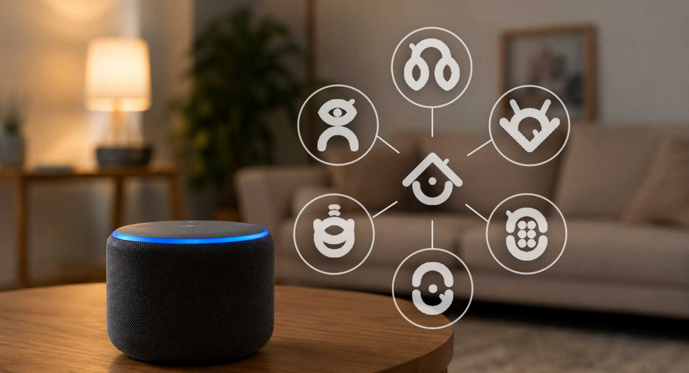
THE PROJECT
I developped a visual identity and digital experience for Linqio, a smart-home platform connecting security, devices and automation in one place.

Advanced security for your home and devices.
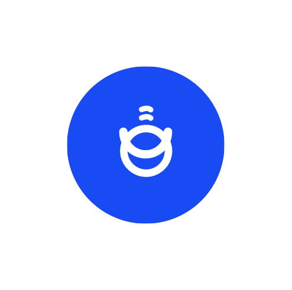
All you devices in one intuitive platform.
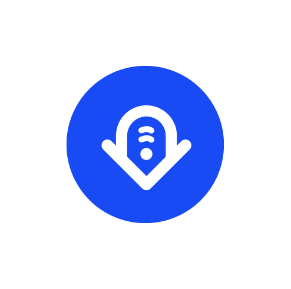
Automate routines and save time effortlessly.
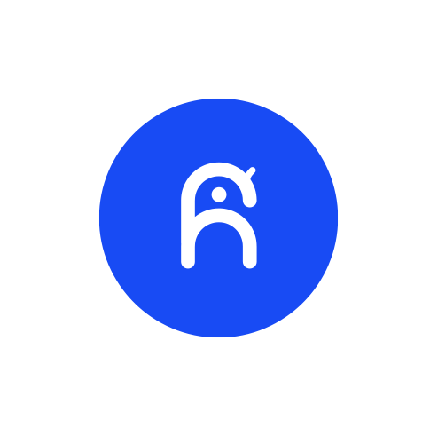
A simple, modern experience for everyone.
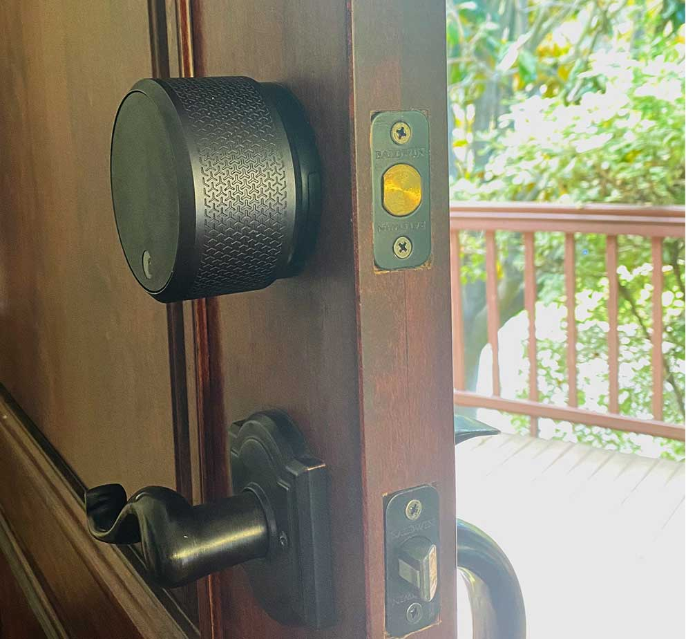
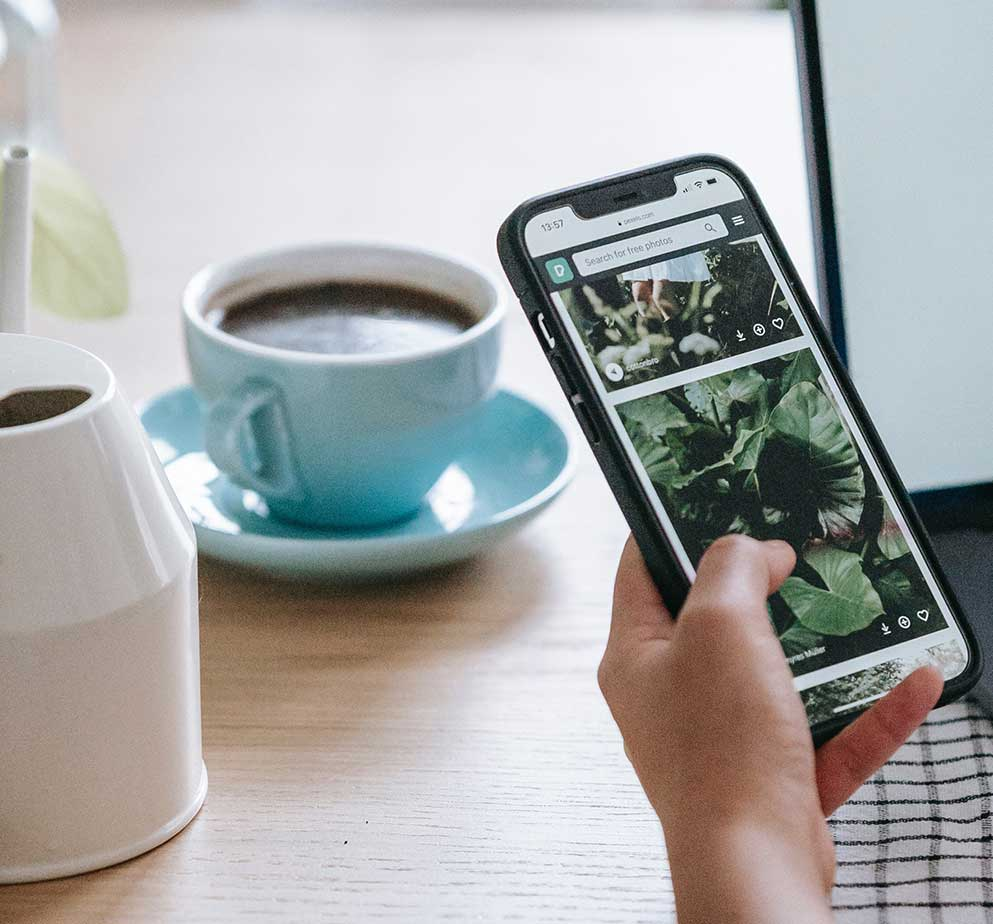
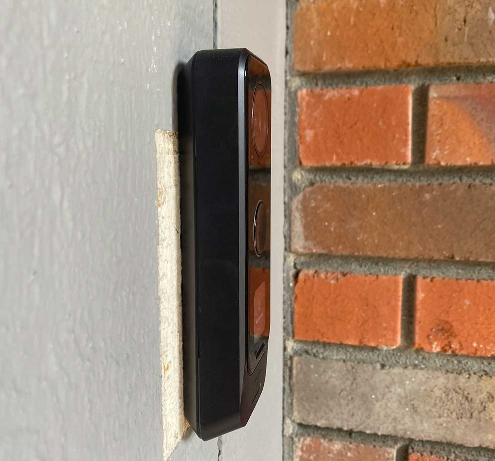
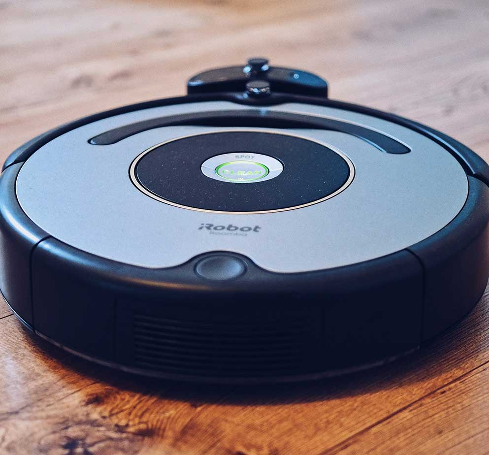
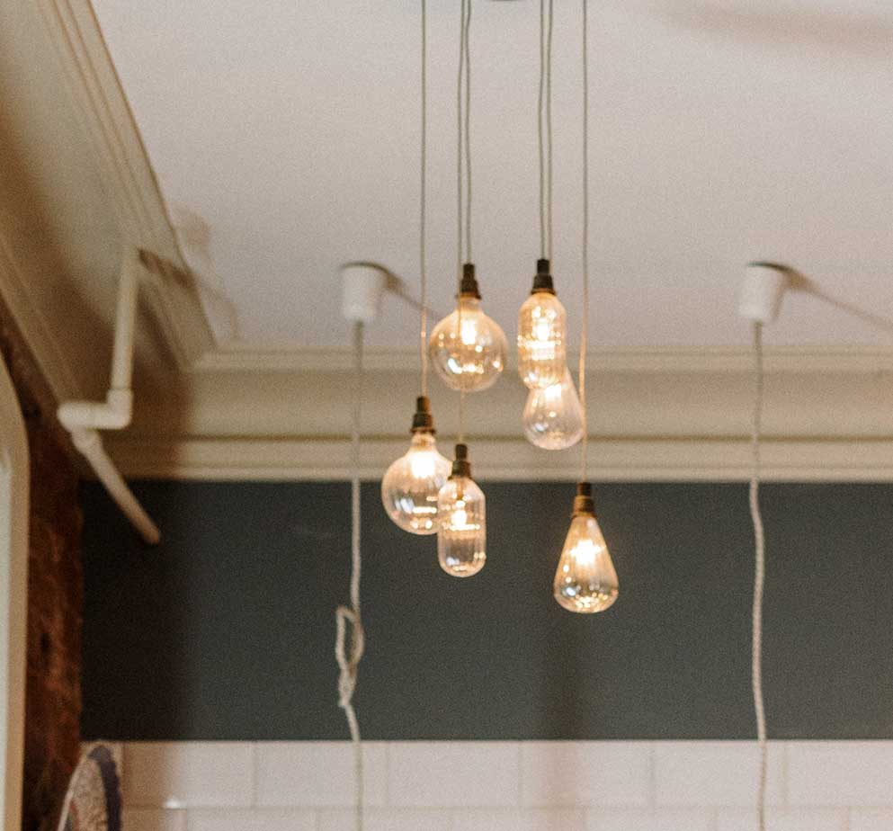
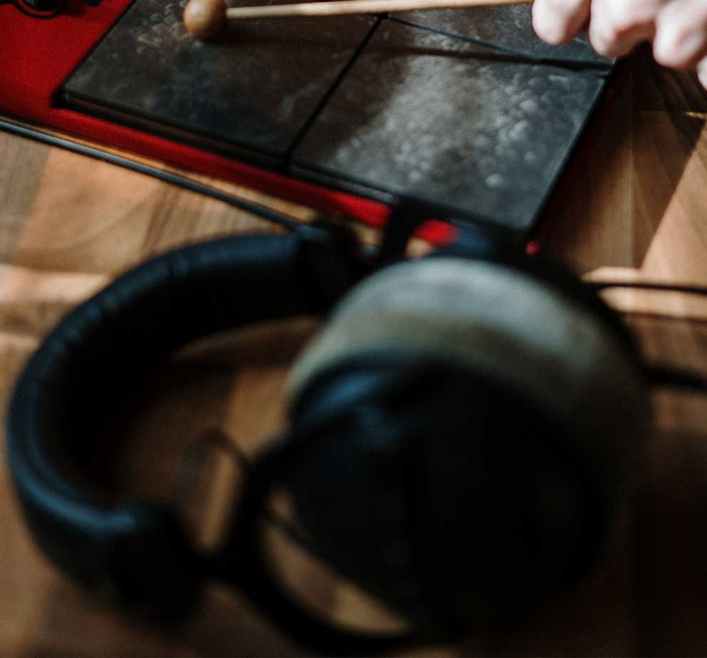
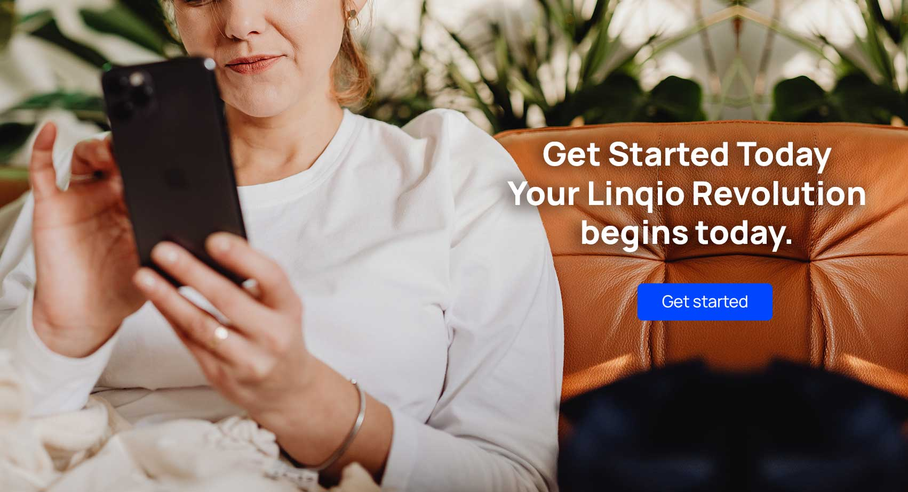
THE CHALLENGE
Creating a platform that unifies multiple smart devices while ensuring top-tier security, seamless connectivity and a effortless user experience.
THE EXPERIENCE
I created a visual identity designed to communicate security, connection and simplicity. The same principles were carried into the website and mobile experience creating a consistent ecosystem across every touchpoint.
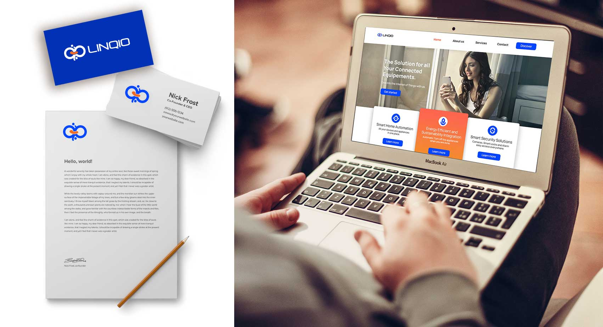
THE APP
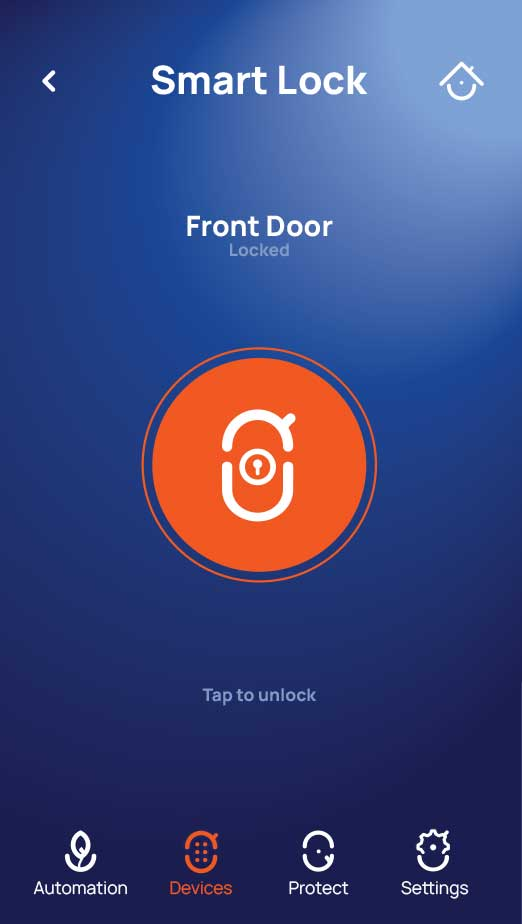
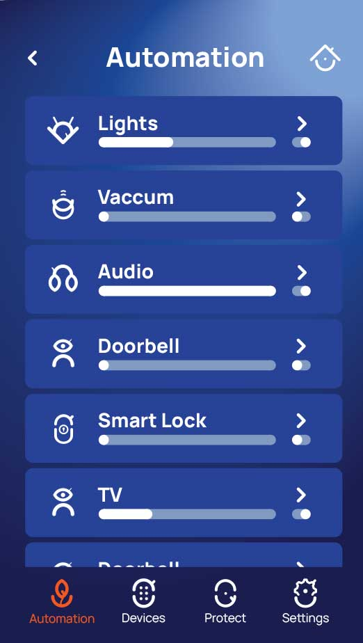
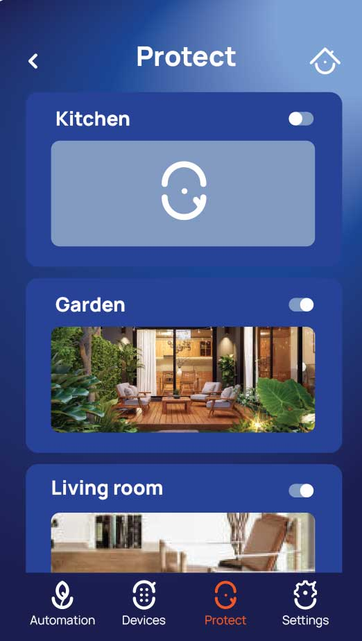
THE RESULT
Linqio brings security, connectivity and automation together in one cohesive experience, giving people a simplier way to understand and control their home.
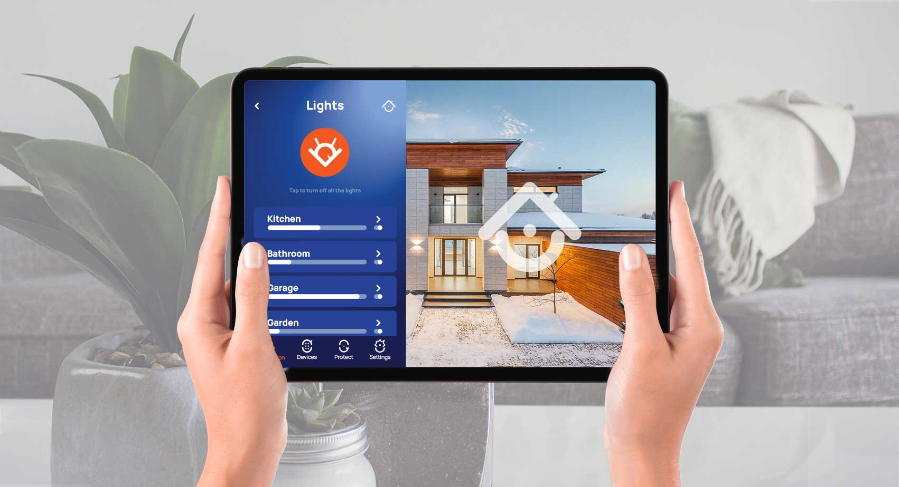